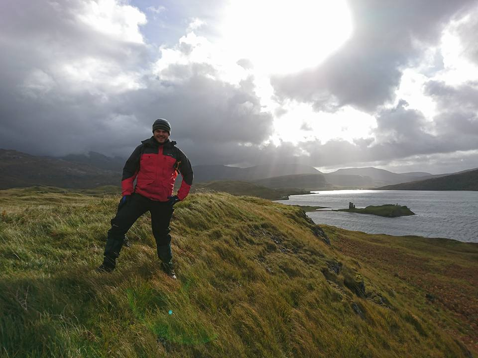

Chris Harbord
Experimental rock deformation
- 2010-2014 Geology MESci, University of Liverpool
- 2014-2018 PhD, University of Durham
- 2018-2020 Postdoc, INGV Roma
- 2020-present, Postdoc, UCL

Research interests:
- The rheology of rocks
- Microstructures of deformed rock
- Design, construction and operation of deformation apparatus